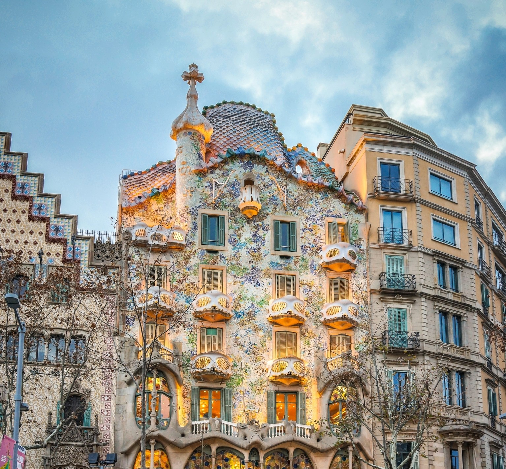
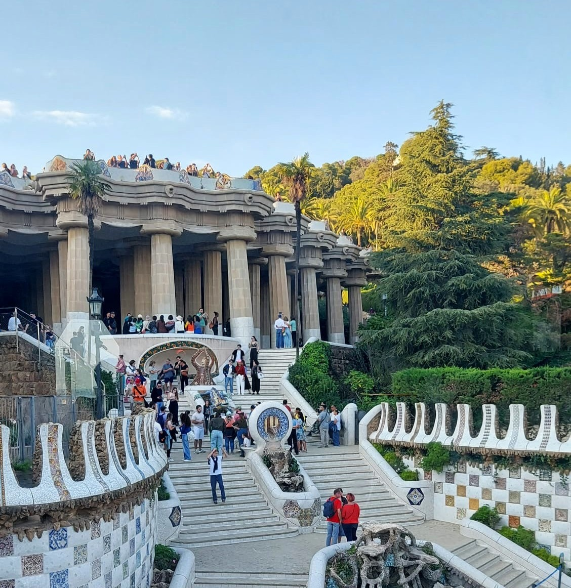
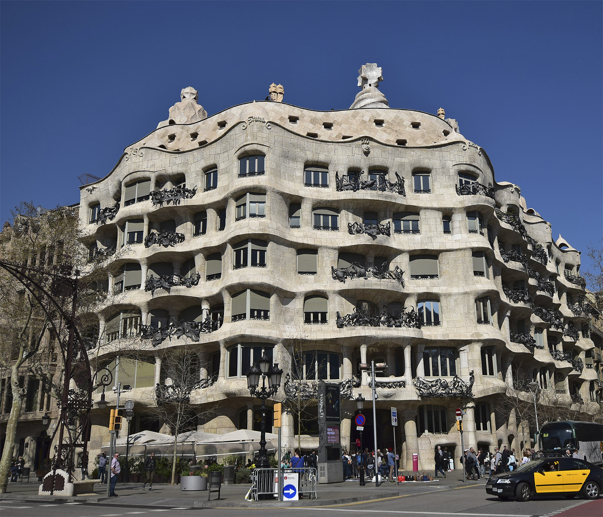
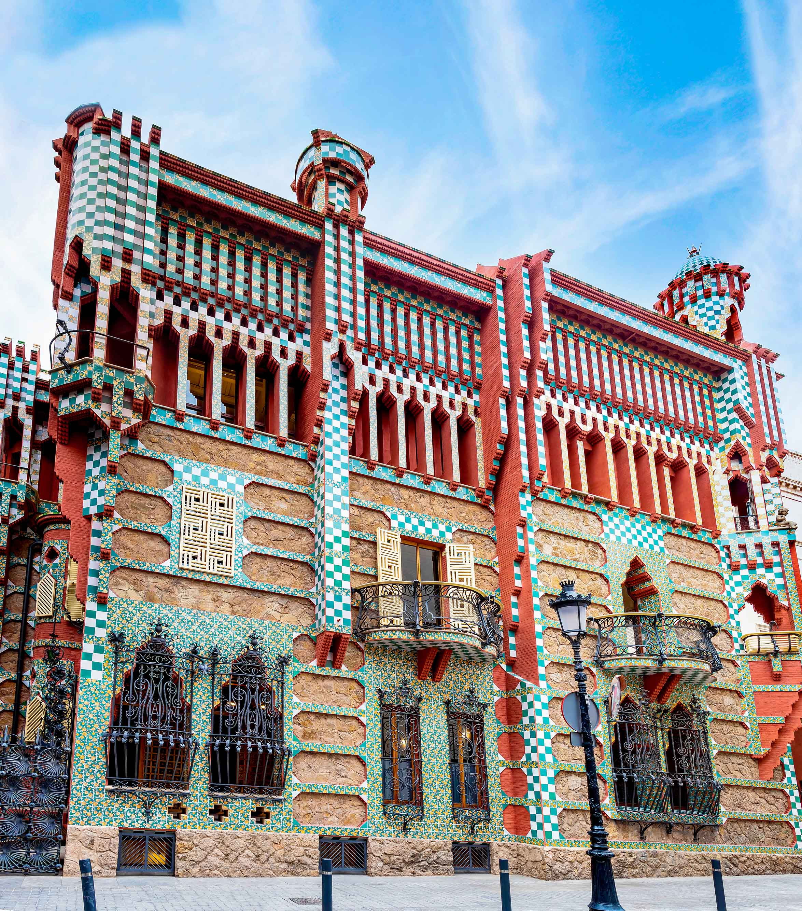

Casa Vicens
Jeden z prvých veľkých projektov, kde Antoni Gaudí začal...

Gaudího celoživotné dielo. Chrám, ktorý rastie organicky ako les...

Legenda o svätom Jurajovi. Strecha pripomína chrbát draka...

Utopické záhradné mesto, kde architektúra splýva s prírodou...

Známa ako La Pedrera. Budova bez jedinej nosnej steny...

Jeden z prvých veľkých projektov, kde Antoni Gaudí začal...